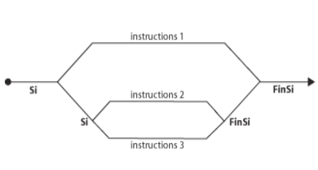

● Il est souvent nécessaire lorsque l'on écrit un programme de distinguer plusieurs cas conditionnant l'exécution de certaines instructions.
● Utilisation d'une structure alternative : si on est dans tel cas, alors on fait cela sinon on fait ceci.
Les tests
● Il n'y a que deux formes possibles pour un test.
Algorithme Conditions Début
Premiére forme.
Si (Condition) Alors
Instructions 1
Finsi
seconde forme.
Si (Condition) Alors
Instructions 2
Sinon
Instructions 3
Finsi
Fin
La structure alternative
● si la condition est vraie, se sont les instructions 1 qui seront exécutées.
● si la condition est fausse, se sont les instructions 2 qui seront exécutées.
● la condition peut être une condition simple ou une condition composée de plusieurs conditions.
Qu'est ce qu'une condition?
● Une condition est une comparaison.
● Une expression définie à partir d'un opérateur de comparaison.
égal à =
différent de <>
strictement plus petit que <
strictement plus grand que >
plus petit ou égal à <=
plus grand ou égal à >=
L'évaluation d'une condition est un booléen
La structure alternative
● Ecrire un algorithme qui demande un nombre à l'utilisateur, et l'informe ensuite si ce nombre est positif ou négatif.
Algorithme Conditions d'entée Variables x, y : Réel Début
Ecrire("Entrez un réel: ")
Lire(x)
Si(x >= 0) Alors
y ← x
Sinon
y ← -x
Finsi
Ecrire("la valeur absolue de ", x, "est:", y)
Fin
Conditions composées
● Une condition composée est une condition formée de plusieurs conditions simples reliées par des opérateurs logiques:
ET, OU, OU exclusif (XOR) et NON
● Exemples:
x compris entre 2 et 6 : (x > 2) ET (x < 6)
n divisible par 3 ou par 2 : (n%3=0) OU (n%2=0)
● Dans une condition composée employant à la fois des opérateurs ET et des opérateurs OU, la présence de parenthèses possède une influence sur le résultat, tout comme dans le cas d'une expression numérique (exemple multiplications et des additions).
● L'évaluation d'une condition composée se fait selon des règles présentées généralement dans ce qu'on appelle tables de vérité.
Tables de vérité
C1
C2
C1 ET C2
VRAI
VRAI
VRAI
VRAI
FAUX
FAUX
FAUX
VRAI
FAUX
FAUX
FAUX
FAUX
C1
C2
C1 OU C2
VRAI
VRAI
VRAI
VRAI
FAUX
VRAI
FAUX
VRAI
VRAI
FAUX
FAUX
FAUX
C1
C2
C1 XOR C2
VRAI
VRAI
FAUX
VRAI
FAUX
VRAI
FAUX
VRAI
VRAI
FAUX
FAUX
FAUX
C1
NON C1
VRAI
FAUX
FAUX
VRAI
● Ecrire un algorithme qui demande deux nombres à l'utilisateur et l'informe ensuite si leur produit est négatif ou positif (on laisse de côté le cas où le produit est nul). Attention toutefois : on ne doit pas calculer le produit des deux nombres.
Algorithme Conditions alt Variables m, n : Réel Début
Ecrire("Entrez deux nombres: ")
Lire(m, n)
Si(((m > 0) ET (n > 0)) OU ((m < 0) ET (n < 0))) Alors
Ecrire("Leur produit est positif")
Sinon
Ecrire("Leur produit est négatif")
Finsi
Fin
Tests imbriqués
● Les tests peuvent avoir un degré quelconque d'imbrications.

Algorithme Conditions ambrt Début
Si condition1 Alors
instructions1
Sinon
Si condition2 Alors
instructions2
Sinon
instructions3
Finsi
Finsi
Fin
Algorithme Conditions nbr_scoop Variables n : Réel Début
Ecrire("entrez un nombre: ")
Lire(n)
Si(n < 0) Alors
Ecrire("Ce nombre est négatif")
Sinon
Si(n = 0) Alors
Ecrire("Ce nombre est nul")
Sinon
Ecrire("Ce nombre est positif")
Finsi
Finsi
Fin
Remarque:
Dans cette version, si le nombre est négatif on ne fait qu'un seul test.
Conseil:
Utiliser les tests imbriqués pour limiter le nombre de tests et placer d'abord les conditions les plus probables (minimiser la complexité).
Selon...cas
● Afficher le jour correspondant au rang du jour dans la semaine qui est compris entre 1 et 7.
Algorithme jour de la semaine Variables n : entier Début
Lire(n)
Selon(n):
Cas n = 1: Ecrire("Lundi")
Cas n = 2: Ecrire("Mardi")
Cas n = 3: Ecrire("Mercredi")
Cas n = 4: Ecrire("Jeudi")
Cas n = 5: Ecrire("Vendredi")
Cas n = 6: Ecrire("Samedi")
Cas n = 7: Ecrire("Dimanche")
Sinon Ecrire("le numéro doit être compris entre 1 et 7")